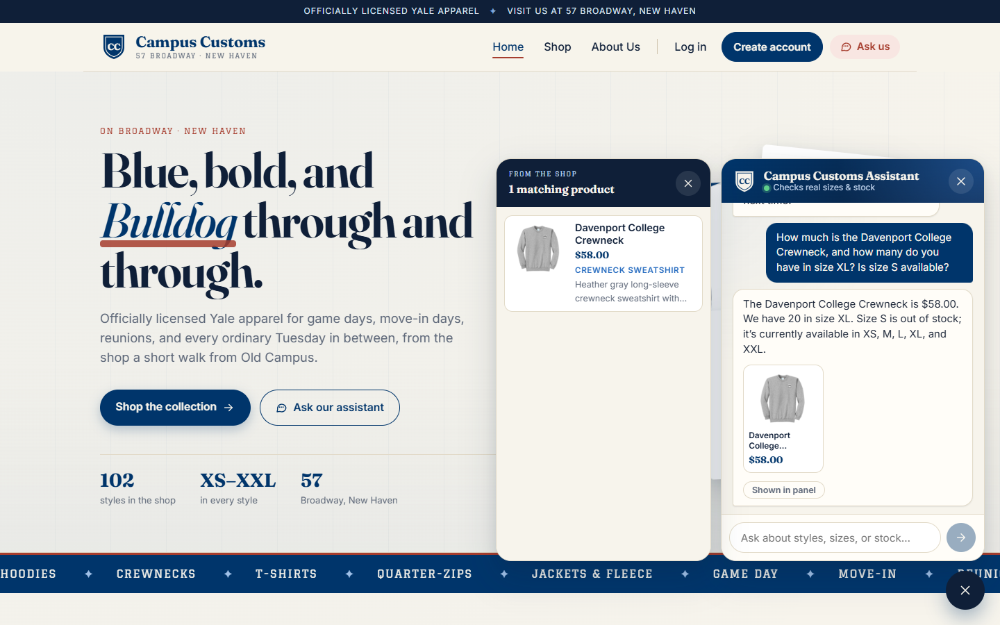
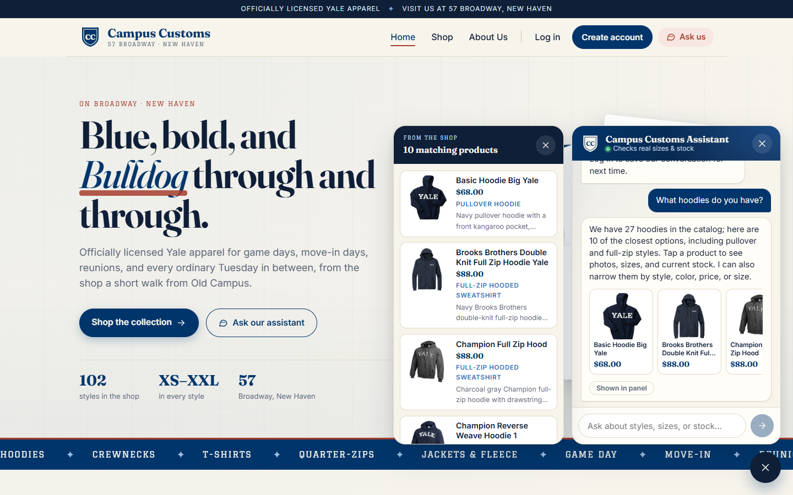
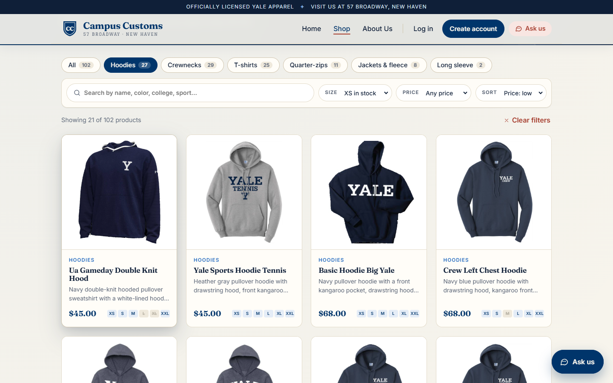

Check 1: The chatbot gives a real product's price and inventory
Asked about the Davenport College Crewneck, the assistant replied that it costs $58.00, there are 20 in size XL, and size S is out of stock. This matches the database exactly: price 58.0, XL = 20, S = 0.

Check 2: Product cards appear dynamically after a category question
After the shopper asked "What hoodies do you have?", 10 clickable hoodie cards (image, name, price) appeared in the chat and in the side panel. Every card is a real catalogue product with its database price, and "27 hoodies" matches the database count.

Check 3: Products page search and filters (Problem 9)
Choosing Hoodies, XS in stock, and Price: low narrowed the page from 102 products to 21, with the two $45.00 hoodies first. That matches the database, which has 21 hoodies with XS in stock and $45.00 as the lowest hoodie price.
